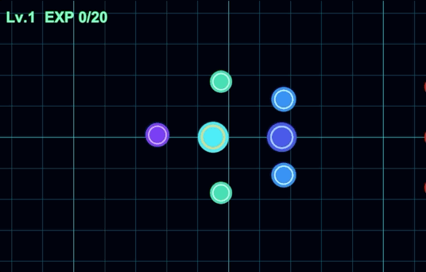

작업 목표
앞선 작업에서 로컬 LLM, OpenCode, Unity MCP와 검증 흐름을 정리했다면 이번에는 그 환경을 실제 게임 개발에 사용해보는 단계였다. 단순한 코드 생성이 아니라 기존 Unity 프로젝트 안에서 여러 전투 시스템을 연속적으로 추가하고 연결해 실제로 플레이 가능한 결과물까지 만들 수 있는지 확인하는 것이 목표였다.
작업 결과
Unity Editor에서 실행하면 아군과 적군이 즉시 전투를 시작하는 고정 전투 샌드박스를 구성했고, 근접·원거리 역할, HP 피드백, 레이저 Projectile까지 하나의 장면에서 동작하도록 연결했다.

Hero를 포함한 아군 7명과 Boss를 포함한 적군 9명이 게임 시작과 동시에 전투한다.
Archer와 Enemy Ranged가 실제 공격 사거리를 사용해 후열에서 전투하도록 구성했다.
피격된 유닛의 머리 위에 얇은 HP Bar가 나타나고 남은 체력에 따라 실제 길이가 감소한다.
원거리 공격 시 작은 레이저 Projectile이 공격자에서 타깃 방향으로 날아간다.
실시간 전략 시뮬레이션의 전투 부분을 만들어봤다
이번 작업은 완성된 RTS 전체를 만드는 것이 아니라 실시간 전략 시뮬레이션에서 가장 핵심적인 전투 부분을 작은 데모 형태로 구성하는 데 집중했다. 각각의 기능은 독립된 작은 작업이었지만, 순서대로 연결하자 하나의 전투 경험이 되었다.
다수 유닛 전투
아군 7명과 적군 9명이 기존 Combat 시스템을 이용해 자동으로 타깃을 찾고 전투한다.
근접 / 원거리
Enemy Melee는 Swordsman, Enemy Ranged는 Archer의 전투 데이터를 재사용해 역할을 분리했다.
HP Bar
피격 직후에만 HP Bar를 보여주고 재피격 시 표시 시간을 다시 갱신하도록 만들었다.
Laser Shot
Ranged 공격에 작은 직사각형 레이저 탄환을 추가해 공격 방향과 전투 흐름을 눈으로 읽을 수 있게 했다.
전투 테스트 환경도 고정했다
시간이 지나면 적군이 계속 추가되던 기존 자동 스폰을 끄고 시작 시점의 전투 구성을 고정했다. 덕분에 같은 조건에서 Targeting, Separation, Ranged Positioning, Death / Retarget 같은 동작을 반복해서 확인할 수 있었다.
시각적 가독성도 하나씩 보완했다
적군 Ranged의 색상을 아군과 구분하고 피격 시 HP를 보여주며, Ranged 공격에는 Projectile을 추가했다. 카메라의 초기 위치처럼 전투를 확인하기 위한 작은 설정도 함께 조정했다.
큰 기능이 아니라 작은 작업을 연속해서 맡겼다
이번 작업에서 가장 크게 확인한 것은 기능의 크기였다. “RTS 전투를 만들어줘”라고 한 번에 지시하지 않고 사람이 다음 단계의 목표를 정한 뒤 로컬 AI가 처리할 수 있을 정도의 작은 범위로 계속 나누었다. 대부분의 기능 작업은 20분 안팎에서 마무리됐고 각 결과를 Play Mode에서 직접 확인한 뒤 다음 작업으로 넘어갔다.
고정 7 vs 9 전투 구성
Battle SetupHero와 Boss를 포함한 아군 · 적군 전투 구성을 만들고 시간 기반 자동 적 스폰을 끄면서 반복 가능한 Combat Sandbox를 만들었다.
적군 Ranged를 실제 원거리 유닛으로 변경
Combat Data이름과 위치만 Ranged였던 적군에 Archer의 기존 전투 데이터를 연결해 공격 사거리와 이동 행동이 자연스럽게 달라지도록 했다.
HP Bar와 피격 피드백 추가
Presentation피격 직후에만 표시되는 얇은 HP Bar를 만들고 Source Sprite 누락으로 Fill이 보이지 않던 문제도 다시 작은 버그 수정 작업으로 나눠 해결했다.
Ranged Laser Projectile 추가
VFXArcher, Mage, Enemy Ranged가 공격할 때 공격자에서 타깃 방향으로 작은 레이저 탄환이 날아가도록 Presentation을 추가했다.
실제 화면에서 확인하고 다음 작은 수정으로 연결
Manual Check자동 테스트가 통과해도 색상, 위치, 카메라, UI 크기처럼 화면을 보고 판단해야 하는 부분은 Unity Play Mode에서 직접 확인했다. 발견한 문제만 다시 좁은 범위로 AI에게 전달했다.
모든 작업을 AI에게 맡기는 것이 빠른 것은 아니었다
작업을 계속하면서 오히려 로컬 AI를 사용하지 않는 편이 빠른 경우도 명확해졌다. 중요한 것은 “전부 AI에게 맡기는 것”이 아니라 AI에게 맡길 일과 사람이 바로 처리할 일을 구분하는 것이었다.
로컬 AI가 효과적이었던 작업
- 기존 코드베이스를 읽고 관련 시스템을 찾아야 하는 기능 추가
- Combatant, CombatDirector, UI Controller처럼 여러 파일을 함께 수정해야 하는 작업
- 기존 동작을 유지하면서 새로운 Presentation을 연결하는 작업
- Focused Test와 Regression Test를 추가하고 반복 검증하는 작업
- 버그 원인을 좁히고 관련 코드와 Prefab wiring을 함께 확인하는 작업
사람이 직접 하는 편이 빨랐던 작업
- 적군 색상을 조금 바꾸는 작업
- HP Bar의 두께 · 너비 · 표시 시간을 눈으로 보며 조절하는 작업
- 카메라 초기 위치처럼 Inspector에서 빠르게 확인할 수 있는 값 조정
- 레이저 속도나 UI 위치처럼 “느낌”을 직접 보면서 튜닝하는 작업
로컬 AI의 가능성을 실제 게임 데모로 확인했다
이번에는 로컬 AI가 코드를 생성할 수 있는지를 확인한 것이 아니라 개발자가 작업 범위를 정하고 결과를 직접 판단하는 방식으로 실제 게임 기능을 계속 연결해 하나의 데모까지 만들 수 있는지 확인했다.
AI Native 개발에서 개발자의 역할
무엇을 만들지 결정
↓
작업을 작은 단위로 분해
↓
로컬 AI에게 구현 지시
↓
자동 테스트로 코드 동작 확인
↓
Play Mode에서 직접 플레이
↓
다음 문제를 다시 작은 Task로 정의코드를 직접 타이핑하는 시간은 줄어들지만 무엇을 만들 것인지 결정하고 결과가 게임으로서 적절한지 판단하는 역할은 오히려 더 중요해졌다.
이번 전투 데모에서는 게임 코드를 직접 작성하지 않았다. 작은 기능을 정의하고, 결과를 플레이하며 확인하고, 다음 수정 방향을 결정하는 방식으로 개발했다.
3줄 요약
- 로컬 AI에게 작은 기능을 연속해서 맡겨 아군과 적군이 싸우고 HP Bar와 Laser Projectile이 동작하는 미니 RTS 전투 데모를 만들었다.
- 대부분의 기능 작업은 20분 안팎의 단위로 처리할 수 있었고 작은 Task → 자동 검증 → 수동 Play Mode 확인 흐름이 안정적이었다.
- 결국 코드 한 줄 직접 작성하지 않고 데모를 완성했지만 색상 · 위치 · 카메라처럼 단순한 튜닝은 사람이 직접 하는 편이 더 빠르다는 것도 확인했다.
다음 작업
작은 기능 단위 개발을 계속 유지
Workflow한 번에 큰 시스템을 맡기기보다 실제 플레이 가능한 기능을 작은 단위로 추가하면서 성공률과 작업 시간을 계속 기록한다.
단순 튜닝은 직접 처리
Hybrid색상, 위치, 크기, 속도처럼 Inspector에서 빠르게 바꿀 수 있는 값은 직접 수정하고, 코드와 여러 시스템이 연결되는 변경에 로컬 AI를 집중시킨다.
더 큰 게임 기능으로 확장
Next Scale이번 전투 데모를 기준점으로 삼아 전투 밖의 진행, 유닛 운용, 전술 조작 등 더 넓은 게임 시스템에서도 같은 AI Native 개발 방식이 유지되는지 확인한다.